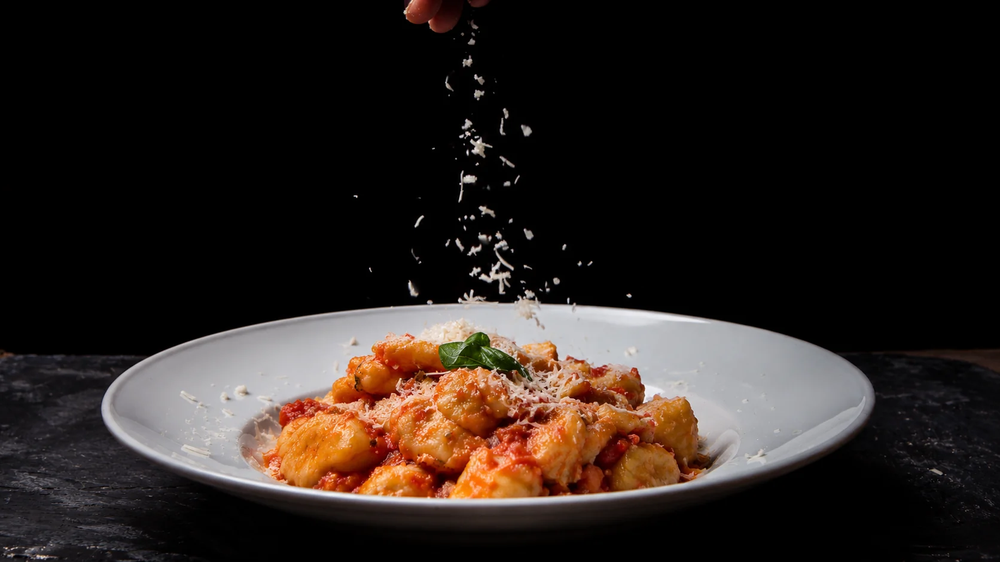
01 / Dalla terraPrimi
Gnocchi al pomodoro
Pomodoro, basilico e una pioggia di formaggio.
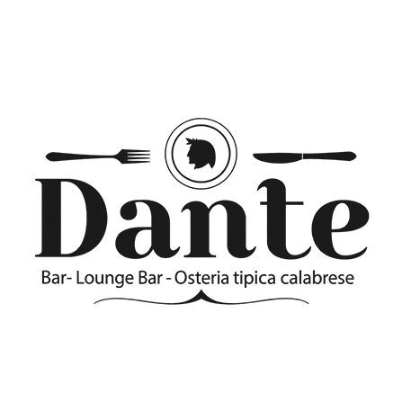
Osteria tipica calabrese
Una terra. Una tavola. Un incontro.
La Calabria,
a tavola.
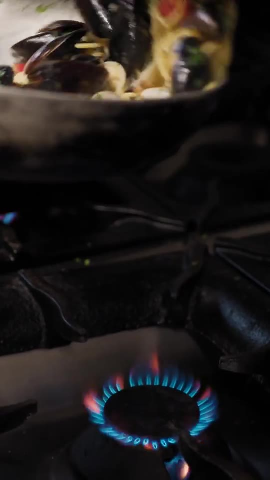
Pasta fatta in casa
Ci sono sapori che raccontano da dove veniamo. La pasta fatta in casa, i prodotti tipici calabresi, una cucina da ritrovare e condividere.
Un assaggio di Dante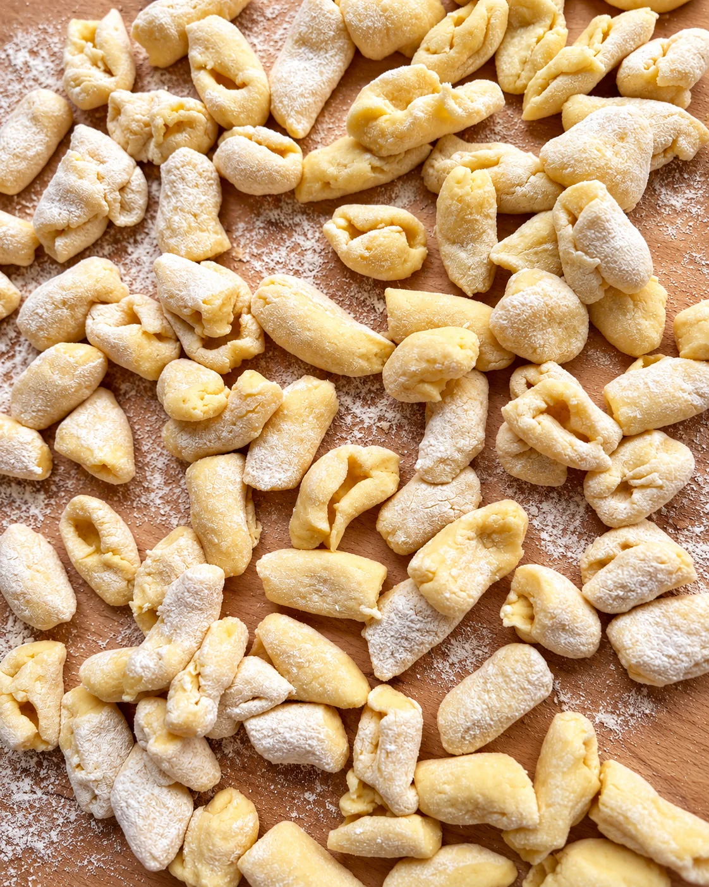
La semplicità
ha una bella storia.
Un sugo che avvolge, il profumo del mare, l'ultimo gesto prima di servire. Il piacere comincia qui.

Pomodoro, basilico e una pioggia di formaggio.
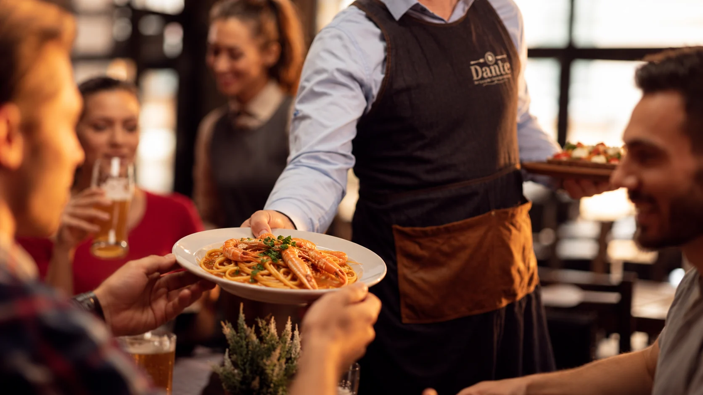
Il mare nel piatto, il piacere di stare insieme.
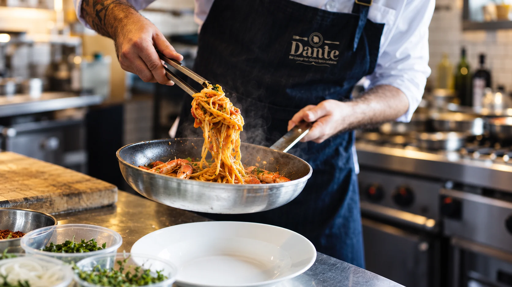
Pasta, frutti di mare e il calore della cucina.
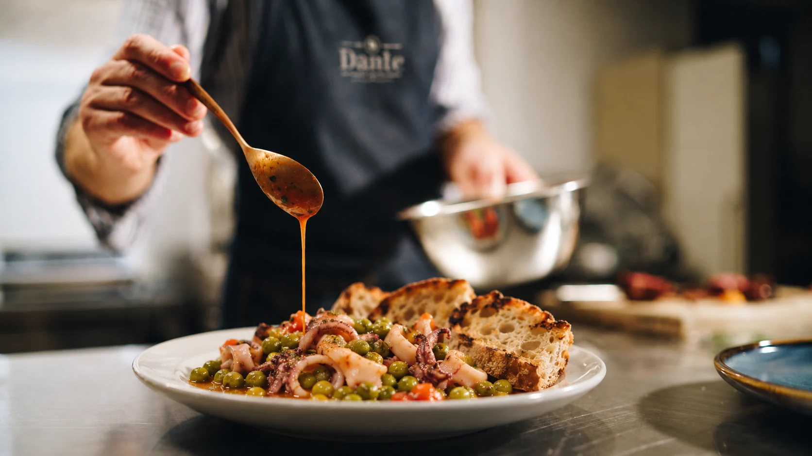
Un sugo da raccogliere, fino all'ultimo boccone.
Il tempo di una preparazione.
La cura di un dettaglio.
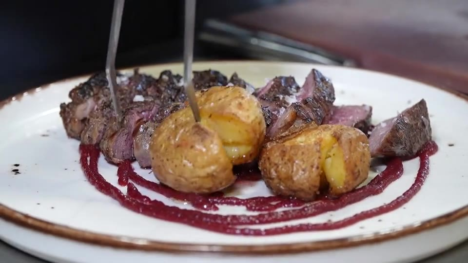
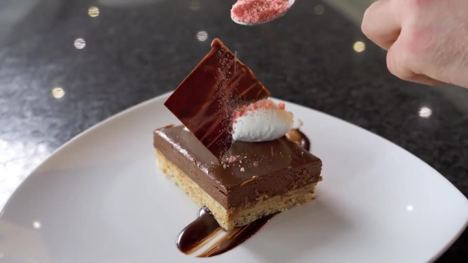
Il piacere di scegliere
L'aperitivo, un vino a tavola, un distillato per chiudere la serata. C'è un momento per ogni calice.
Vini, bollicine e distillati
Il gusto di soffermarsi.
Una collezione che invita a scoprire.
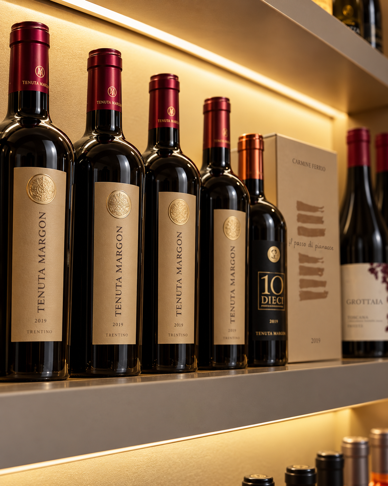
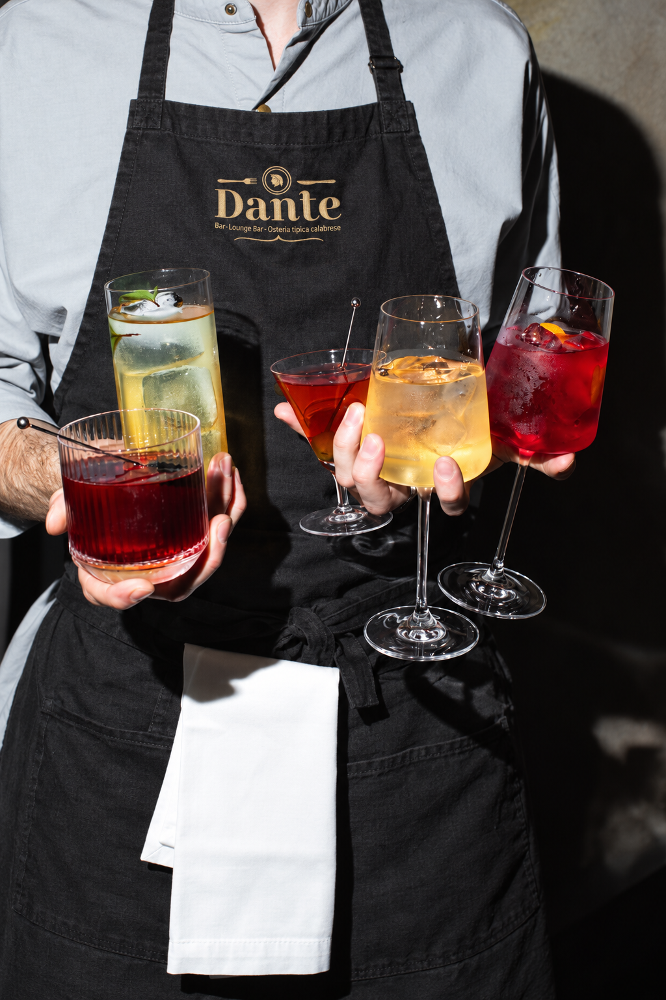
05 / A tavola
Un piatto da raccontare.
Una conversazione che continua.
Un altro buon motivo per restare.
Dall'aperitivo al dopocena,
passando per il piacere della tavola.
Organizza la tua visita
Recapiti, posizione e orari saranno disponibili nella versione definitiva. Intanto, scopri il percorso di richiesta tavolo.
Richiedi un tavoloPercorso dimostrativo. Nessuna richiesta viene inviata.